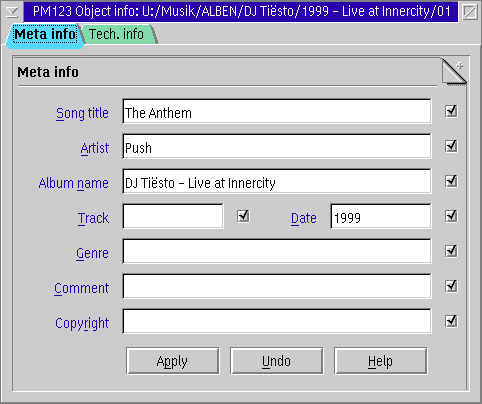
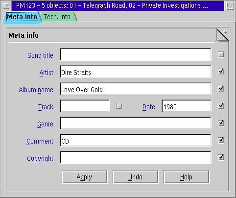
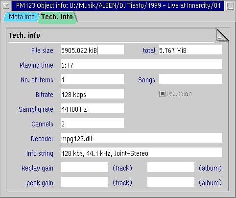

PM123's file info editor is quite simpled. It can be invoked for the current file from the main menu or by pressing Ctrl+E on the player window. You can also edit the info of the files in the playlist by selecting Edit file info from the playlists context menu or by pressing Ctrl+E in the playlist or playlist manager.
The checkboxes right to each entry field select whether the specified field is overwritten. This can make a difference e.g. for MP3 files when the ID3 V1.x tag and the ID3 V2 tag are different. In this case both are overwritten when the appropriate box is checked.
If the selected object does not support writing of the tag, like internet streams, the buttons are disabled.
If the plug-in for the current file supports an alternative tag editor (like mpg123 does), this editor is preferred over the built-in one.

You also can set the info for several files at once. Select more than one files in playlist, invoke File Info Editor, fill the necessary fields, select choices on the right and press the Apply. By default only the boxes of fields, that have identical values for all selected files, are checked.

Also you can see some technical info about selected items(s). This also applies to playlists.